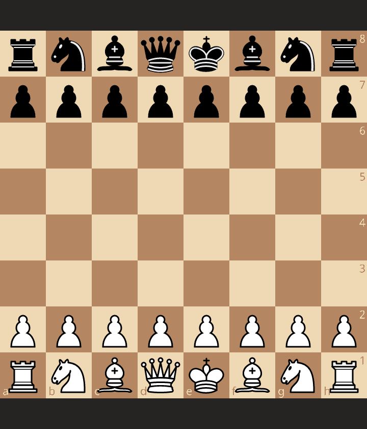

[Event "French Defense - Reti-Spielmann Attack - 1-1-0 /acl-27: Anon. - Anon."]
[Site "https://lichess.org/study/0Cs4cypE/yRTXImdW"]
[Result "*"]
[UTCDate "2019.09.12"]
[UTCTime "17:08:46"]
[Variant "Standard"]
[ECO "C00"]
[Opening "French Defense: Réti-Spielmann Attack"]
[Annotator "https://lichess.org/@/Skittle-Head"]
1. e4 { [%eval 0.24] [%clk 0:08:00] } 1... e6 { [%eval 0.3] [%clk 0:08:00] } 2. g3 { [%eval -0.13] [%clk 0:08:05] } 2... d5 { [%eval -0.09] [%clk 0:08:07] } 3. e5 { [%eval -0.16] [%clk 0:08:10] } 3... c5 { [%eval -0.1] [%clk 0:08:12] } 4. Bg2 { [%eval -0.07] [%clk 0:08:14] } 4... Nc6 { [%eval -0.46] [%clk 0:08:19] } 5. Nf3 { [%eval -0.14] [%clk 0:08:21] } 5... Nge7 { [%eval -0.11] [%clk 0:08:21] } 6. O-O { [%eval -0.04] [%clk 0:08:24] } 6... Ng6 { [%eval 0.17] [%clk 0:08:28] } 7. Re1 { [%eval 0.0] [%clk 0:08:31] } 7... Qc7 { [%eval 0.07] [%clk 0:08:32] } 8. Qe2 { [%eval 0.21] [%clk 0:08:33] } 8... Be7 { [%eval 0.06] [%clk 0:08:26] } 9. c3 { [%eval 0.11] [%clk 0:08:38] } 9... O-O { [%eval 0.46] [%clk 0:08:25] } 10. d3 { [%eval 0.0] [%clk 0:08:43] } 10... f6 { [%eval 0.45] [%clk 0:08:25] } 11. exf6 { [%eval 0.36] [%clk 0:08:25] } 11... Bxf6 { [%eval 0.46] [%clk 0:08:26] } 12. Bg5 { [%eval 0.0] [%clk 0:08:20] } 12... Bd7 { [%eval 0.16] [%clk 0:08:28] } 13. Nbd2 { [%eval 0.0] [%clk 0:08:08] } 13... Rae8 { [%eval 0.67] [%clk 0:08:31] } 14. Bxf6 { [%eval 0.32] [%clk 0:08:04] } 14... Rxf6 { [%eval 0.38] [%clk 0:08:34] } 15. Bh3? { [%eval -0.72] } { Mistake. Best move was Qe3. } { This move proved to be a good move...as it kept pressure on the backward pawn. It pinned the pawn later on move 18... } { [%clk 0:07:39] } (15. Qe3 Nce7) 15... d4 { [%eval 2.17] [%clk 0:07:50] } 16. Ne4 { [%eval 2.21] [%clk 0:07:15] } 16... Rff8 { [%eval 2.72] [%clk 0:07:18] } 17. Nxc5 { [%eval 2.46] [%clk 0:07:13] } 17... b6 { [%eval 4.81] [%clk 0:06:58] } 18. Nxd7 { [%eval 4.92] [%clk 0:07:08] } 18... Qxd7 { [%eval 4.84] [%clk 0:07:04] } 19. Ng5?! { [%eval 3.18] } { Inaccuracy. Best move was Bxe6+. } { 1-0 White wins on time. } { I like my move better The threat of 19.bxe5+ is still there, and also is the threat of Qh5 Anyway... I am happy with this game, as I am studying this line against the French. :] [%clk 0:05:44] } (19. Bxe6+ Rxe6 20. Qxe6+ Qxe6 21. Rxe6 Nd8 22. Rxg6 hxg6 23. Nxd4 Kf7 24. Re1 Kf6 25. b4 g5) *